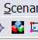
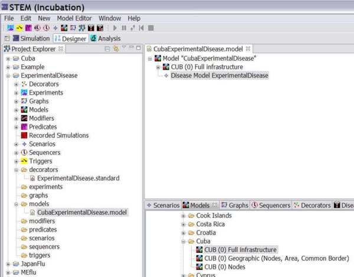

Create a new Model
A model will contain several things including a disease, a locations or graphs
of locations, populations, etc.
|
 |
|
Fig. 1: The new model Icon |
To create a new model, go to the STEM Designer Perspective.
- Click on blue triangle to create new model (for example, concatenate:
CubaExperimentalDisease)
- This will launch a dialog where you can give your model a name.
- Click Next
- Fill in any Dublin core data you want to add
- Click Finished
In the STEM Explorer under your new Project you should see a models folder
containing your model. Double
click on your model and you should see also see it in the Resource Set Window.
|
 |
|
Figure 2: The designer perspective showing the new
model names "CubaExperimentalDisease" in both the STEM project Explorer
under a project entitled "Experimental Disease" and also in
the "Resource Set" Window. |
Save your work at this point by hitting ctrl-s